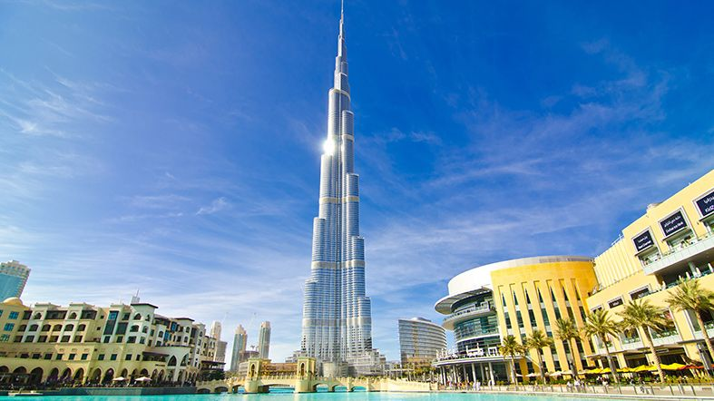

Un Poco de Dubai
 Es uno de los siete emiratos que conforman los Emiratos Árabes Unidos, cuya capital es la ciudad homónima. Está situado en la costa del golfo Pérsico, en el desierto de Arabia, y limita al sur con el emirato de Abu Dabi, con el de Sharjah por el noreste y, a través del exclave de Hatta, con el Sultanato de Omán por el sureste y con los emiratos de Ajmán por el oeste y Ras al-Jaima por el norte. El entrante de agua salada del golfo Pérsico denominado Khawr Dubayy atraviesa la ciudad capital en dirección noreste-suroeste.8 Tiene una superficie total de 4114 km
Es uno de los siete emiratos que conforman los Emiratos Árabes Unidos, cuya capital es la ciudad homónima. Está situado en la costa del golfo Pérsico, en el desierto de Arabia, y limita al sur con el emirato de Abu Dabi, con el de Sharjah por el noreste y, a través del exclave de Hatta, con el Sultanato de Omán por el sureste y con los emiratos de Ajmán por el oeste y Ras al-Jaima por el norte. El entrante de agua salada del golfo Pérsico denominado Khawr Dubayy atraviesa la ciudad capital en dirección noreste-suroeste.8 Tiene una superficie total de 4114 km
Los primeros habitantes del emirato se dedicaban al comercio de perlas,9 una actividad en la que basarían su economía hasta el siglo XX10 y que les permitiría tener relaciones comerciales con China, India y Pakistán, principalmente. Su progreso económico y la estratégica ubicación en el golfo Pérsico11 motivó la ambición de otras naciones para apoderarse de sus rutas comerciales. En 1766, Gran Bretaña se hizo con el control de las rutas que les unían con el golfo Pérsico,12 y desde entonces Dubái pasó a constituir un protectorado del gobierno británico, situación que prevalecería por casi dos siglos. Desde 1833 el clan Al Maktum gobierna el emirato. El descubrimiento de petróleo en Dubái, en los años 1960, supuso un cambio significativo en la economía y administración de Dubái. En la década siguiente se formaron los Emiratos Árabes Unidos, dando término a su relación de dependencia con el Reino Unido.10
Turismo en Dubai
 En los últimos años Dubai ha ganado fama y popularidad a nivel mundial como destino turístico. Como destino de vacaciones el turismo en Dubai ofrece un amplio rango de posibilidades, desde la animada actividad de los centros comerciales y el zoco, hasta la paz que se vive en el desierto.En See Dubai Tours hemos dividido en tres las actividades que le recomendamos a la hora de planificar sus actividades de turismo en Dubai: Top 10 que ver en Dubai, Imprescindibles y Explorar Dubai.
Después de un día de turismo en Dubai y aventuras, nos merecemos un descanso. See Dubai Tours le ofrece una amplia gama de hoteles en Dubai en los que disfrutar de un merecido descanso, para todos los bolsillos.
Dubái es una ciudad, y a su vez la joya dentro de los siete que componen los Emiratos Árabes Unidos. Se encuentra a mitad de camino hasta la Península Arábiga en el extremo sureste del Golfo Pérsico.
Contrariamente a la creencia popular, actualmente su riqueza no proviene principalmente de petróleo, sino también de bienes inmuebles y las transacciones financieras, que están ayudando a la convertirla en una de las ciudades de mayor crecimiento en el Oriente Medio